땅을 보는 눈으로
개발의 기준을 만듭니다.
주식회사 테라비스는 제1종 환경영향평가업체입니다. 사계절 현지조사로 땅과 생태를 직접 기록하고, 그 자료로 개발과 보전이 함께 갈 수 있는 길을 평가합니다.
환경영향평가의 질은 현장에서 얼마나 오래, 얼마나 정확히 보았는가에서 결정됩니다. 테라비스는 조사한 연구원이 평가서를 쓰고, 협의가 끝날 때까지 직접 답합니다.
네 가지 평가,
하나의 팀
제1종 환경영향평가업으로서 「환경영향평가법」에 따른 평가서 작성을 모두 대행합니다.
전략환경영향평가정책계획 · 개발기본계획
계획을 확정하기 전에 입지와 규모의 대안을 비교해, 보전가치가 높은 지역을 처음부터 피해 갑니다.
환경영향평가6개 분야 21개 항목
사계절 현지조사와 정량 예측으로 영향을 평가하고, 저감방안과 협의 대응까지 수행합니다.
소규모환경영향평가관리 · 농림 · 자연환경보전지역
소규모 개발이라도 법정보호종 서식 가능성과 경관 영향을 먼저 확인하고 협의를 진행합니다.
사후환경영향조사협의내용 이행 확인
공사와 운영 기간 동안 같은 지점을 같은 방법으로 반복 조사해 변화를 기록합니다.
계절이 바뀌면
보이는 생물도 바뀝니다.
한 번의 조사로는 놓치는 종이 생깁니다. 분류군마다 출현 시기에 맞춰 조사 일정을 짭니다.
봄
- 양서류 산란·번식 조사
- 봄철 식물상·개화기 식생
- 번식 조류 세력권
여름
- 곤충·저서성 대형무척추동물
- 어류 및 수질 현황
- 식생 군락 구조
가을
- 철새 도래 및 이동 경로
- 포유류 흔적·무인카메라
- 가을철 식물상
겨울
- 월동 조류 개체수
- 포유류 족적 조사
- 대기질 동절기 측정
멸종위기 야생생물 Ⅰ·Ⅱ급
출현 위치와 서식 범위를 GIS로 정리해 보호 방안을 평가서에 반영합니다.
천연기념물 · 보호수
관계 법령에 따른 별도 절차가 필요한지 초기에 확인합니다.
대체서식지 · 이식
회피가 어려울 때 이주·이식 계획과 사후 모니터링을 설계합니다.
측정부터 지도까지
직접 합니다.
동·식물상 정밀조사
식물·포유류·조류·양서파충류·어류·곤충 분류군별로 현장을 조사합니다.
대기·소음·수질 현황 측정
계절별 현황을 측정해 영향 예측의 기준값을 확보합니다.
GIS · 드론 분석
토지피복, 녹지자연도, 경관 변화를 지도와 단면으로 보여줍니다.
전북과 수도권,
두 거점에서 움직입니다.
전북 완주
전북특별자치도 완주군 삼례읍 삼례로 443, 706호(우석대학교 본관 7층) 호남·충청권 사업 대응
경기 안양
경기도 안양시 만안구 덕천로 152번길 25아이에스비즈타워센트럴 제20층 B동 2010A호 수도권·강원권 사업 대응
권역 구분은 시안용 제안 문구입니다.

부지 위치 하나면
검토를 시작할 수 있습니다.
주소나 지번, 사업 면적을 알려주시면 평가 대상 여부와 필요한 조사 범위를 안내해 드립니다.
- terravis2026@naver.com
- Web
- www.terravis.co.kr